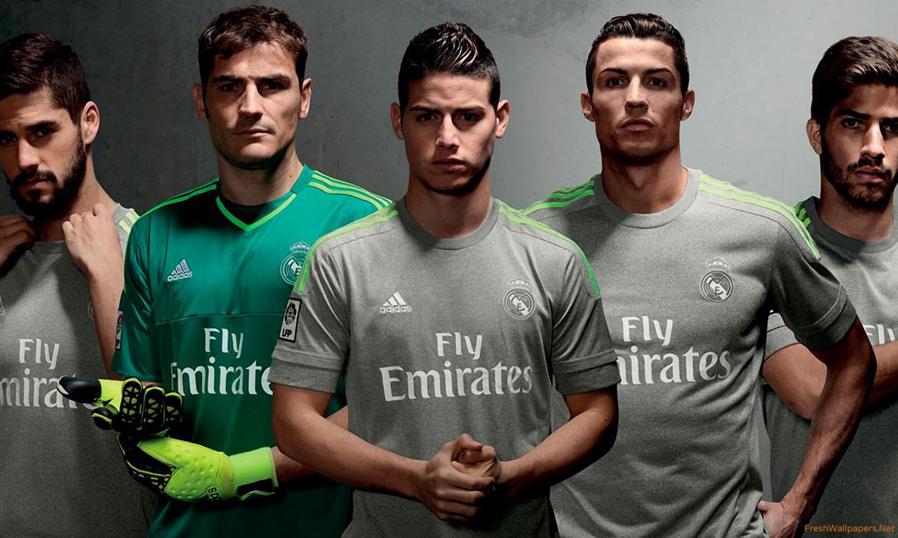
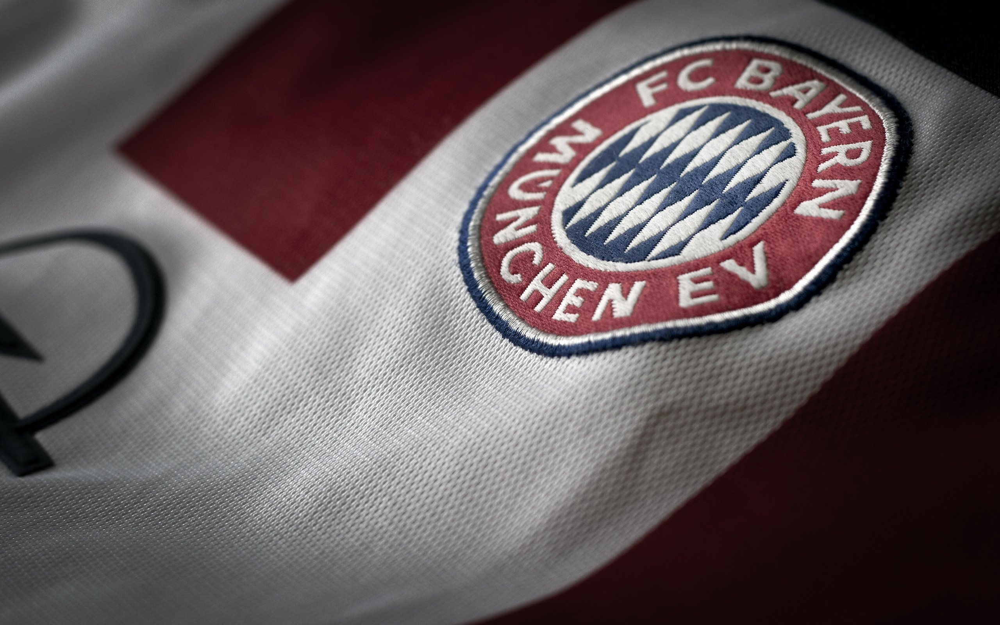
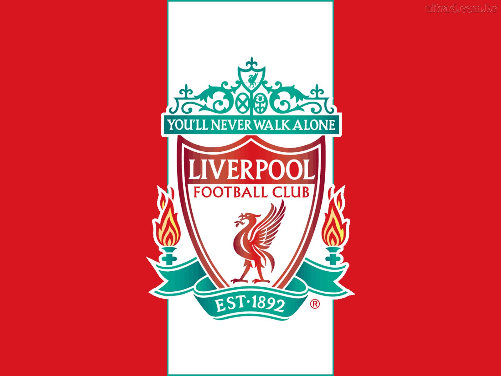

Sarnia Football Agency
About Us
Sarnia Football Agency wouldn't have been here if Real Madrid Football Club wouldn't have cared about it's fans in Sarnia. So before going through the history of the company, let's take a quick look at the history of Real Madrid.
Story of Real Madrid
 Probably Real Madrid nowadays would be known by it's best player - Cristiano Ronaldo. Before going into that, let's take a quick look at Cristiano's history. Cristiano started playing football in a local team at age eight and displayed a unique talent for the game from his earliest efforts. His father recognized his ability, giving him encouragement and training before he eventually signed with Nacional – a local football club – at the age of ten.
Probably Real Madrid nowadays would be known by it's best player - Cristiano Ronaldo. Before going into that, let's take a quick look at Cristiano's history. Cristiano started playing football in a local team at age eight and displayed a unique talent for the game from his earliest efforts. His father recognized his ability, giving him encouragement and training before he eventually signed with Nacional – a local football club – at the age of ten.
His successes were recognized by the club’s staff, and he was sent for training at the club’s Academia Sporting facility – a leading training ground for young players. Just a few years into his training, Cristiano Ronaldo was diagnosed with a serious heart condition that was treated during his early teens, allowing him to continue to play.In 2003, Cristiano Ronaldo became the first Portuguese player to be part of the well-known Manchester United team, signing a £15-million contract and securing himself a future as a football star. He played as a midfielder for Manchester United for three years before breaking out during the 2006 season as a promising new player.The years between 2006 and 2008 were Cristiano Ronaldo’s years to shine, with the young player scoring twenty goals in a season during 2006. His performance lead to numerous offers from other clubs, including an incredible £54-million contract from Real Madrid, attempting to entire the young star to their own team.Ronaldo stayed with Manchester United, however, signing a record-setting contract that earned him over £120,000 per week. The young star lived up to expectations in the following years, scoring hat tricks against other teams and dominating many of the games that he played in.
In 2009, however, Real Madrid announced to the world that they were welcoming the Portuguese athlete to their team. Cristiano Ronaldo signed on with an amazing £80-million contract to his name, making him the most well-paid football player in history and a huge investment for the club.He proved to be worth the investment, scoring well for the club. During a 2011 game against Racing de Santander, Ronaldo scored four goals, making him one of the most successful offensive players in the club’s history. He continued to perform well, with his accomplishments including a goal scored against every other team in La Liga.
In the first few years of this new decade three trophies were added to the cabinet by José Mourinho's Real Madrid. The most notable was the 2011-12 Liga title, which they won with a record-breaking 100 points, the highest score achieved in the history of the championship at that stage, and 121 goals. They also beat Barcelona to clinch a Copa del Rey and a Supercopa de España. In June 2013, Carlo Ancelotti arrived at Real Madrid. The Italian won four trophies with the Whites, the first coming in the shape of Real Madrid's nineteenth Copa del Rey, after beating Barcelona 1-2 in the final. On 24 May 2014, Madrid lifted the European Cup once again, claiming La Décima with a 4-1 victory over Atlético in Lisbon. Goals from Ramos, Bale, Marcelo and Cristiano secured the triumph. In Ancelotti's second season, further silverware arrived: the European Super Cup against Sevilla and Real Madrid's first Club World Cup, against San Lorenzo, rounding off a historic 2014 in which the team won more trophies than any other year. In June 2015, Rafa Benítez, a coach who allies experience with a track record of success and is Real Madrid through and through, returned to the club he learned his trade at to lead a new chapter for the Whites.
Alliances with Other Clubs
Following on from the Grünwald Stadium and later the Olympic Stadium, the stunning ground in the north of Munich is the third home venue in Bayern’s long Bundesliga history, and certainly the most spectacular. Europe’s most modern stadium, with a capacity of more than 70,000, has already established itself in the collective conscience of football fans all over the world within a short timescale. Visitors continue to be particularly impressed by the facade. 2,760 diamond-shaped cushions form the world’s biggest membrane cladding covering an area of 66,500 m². Even if it is not your first visit, it’s hard to believe the evidence of your own eyes at night matches when the whole stadium appears to be red when viewed from the outside. The three-tier interior of the Allianz Arena has extraordinary acoustics that rapidly turn the stadium into a cauldron when hosting thrilling encounters. It is no surprise that the Allianz Arena is nearly always full to the rafters. Around two million fans visit the stadium every season with all 71,000 available seats and standing places being sold out for all 17 Bundesliga home games. Bayern’s incredible attendance record invariably includes 68,000 full houses for European fixtures (the capacity is reduced by 3,000 in the all-seat configuration). As a rule, shortly after the Bundesliga fixtures are announced at the beginning of July, more than half of Bayern’s league games in the Allianz Arena sell out at once. What brings the fans streaming to Fröttmaning in their tens of thousands? The stars of the mighty Bayern Munich of course. But the fans can also expect to be well looked after, both before and after the game. 6,000 m² of catering facilities take care of culinary requirements. Europe’s biggest multi-storey car park provides nearly 10,000 parking spaces.Since May 2012 there has been another compelling reason for fans and families to flock to the stadium in droves: the FCB Erlebniswelt, housed at the Allianz Arena and already established as a must–see attraction for thousands of the five million visitors to Munich every year. Germany’s biggest club museum tells the absorbing story of the club in an interactive installation covering more than 3,000 m².
After experiencing the FCB Erlebniswelt, visitors enter the gigantic FC Bayern Megastore, now expanded and modernised, and an even more attractive proposition than ever before. Official merchandise dedicated to Germany’s most successful club fills almost 1,000 m², and is the widest range offered by any Bundesliga club with more than 500 items for fans.
This architectural wonder was conceived by world-renowned architects Jaques Herzog and Pierre de Meuron. Particular pride can be taken by the fact that the Allianz Arena was positively welcomed by the Munich public. In a referendum held in the autumn of 2001 an overwhelming majority of 65.8 percent of Munich citizens voted in favour of the construction project. The foundation stone was laid on 21 October 2002. Less than three years later, Bayern Munich faced Germany on 31 May 2005 for the opening match in the Arena. Bayern are now the sole shareholders in the Allianz Arena. TSV 1860 Munich, who were originally joint occupants of the stadium, are now tenants up to 30 June 2025. According to a survey conducted by political journal “Cicero”, the Allianz Arena became Germany’s favourite sports venue, and one of the top ten national sites of interest in the country just three years after it was built.